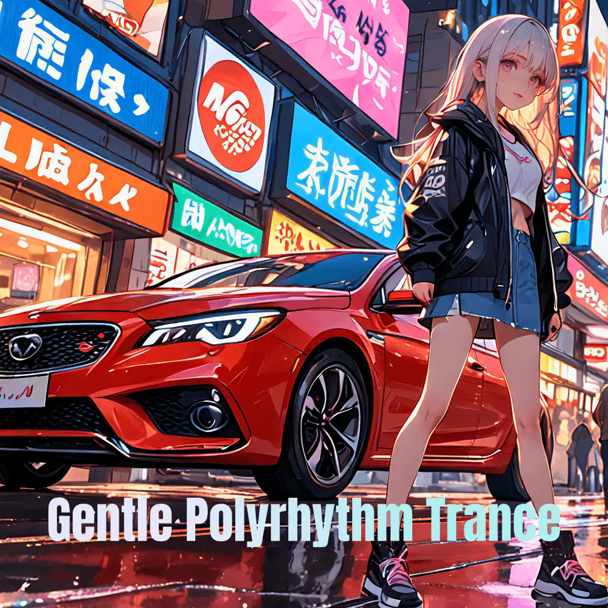

Trance · Electronic · Instrumental
Gentle Polyrhythm Trance: Steady Beats & Subtle Vibes
Nanashino-chan
Nanashino-chanの「Gentle Polyrhythm Trance: Steady Beats & Subtle Vibes」。Trance / Electronic / Instrumentalを楽しめる全18曲のインストゥルメンタル作品です。「Ethereal Dawn / Subtle Pulse」などを収録。気になる曲を試聴して、配信サービスでお気に入りを見つけてください。
2025-02-24 リリース · 18 曲 · Instrumental
アルバムを試聴
気になる音楽を、ここから。
曲を選ぶまでジャケットを表示します。試聴にはYouTubeを使用します。
YOUTUBE PREVIEW
試聴する曲を選んでください
曲を選ぶまでジャケットを表示します。試聴にはYouTubeを使用します。
再生できない場合は、配信サービスでアルバムや曲を開いてください。
配信サービスでアルバムを探す
「検索」のリンクは検索結果を開きます。サービス内でアルバムや曲を選択してください。
収録曲一覧 18
- 01Ethereal Dawn
- 02Subtle Pulse
- 03Harmonic Whisper
- 04Rhythmic Mirage
- 05Polyrhythmic Breeze
- 06Quiet Resonance
- 07Gentle Echoes
- 08Steady Horizon
- 09Calm Currents
- 10Soothing Shifts
- 11Flowing Vibrations
- 12Ambient Layers
- 13Rhythm in Reflection
- 14Mellow Interlude
- 15Drifting Cadence
- 16Silent Grooves
- 17Twilight Waves
- 18Final Reverberation
SNSで使いたい音源を探す
「Nanashino-chan ＋ 曲名」をコピーして、SNSアプリの音源検索に貼り付けてください。音源の表示は地域やアカウントにより異なります。コピー機能は利用許諾を付与するものではありません。